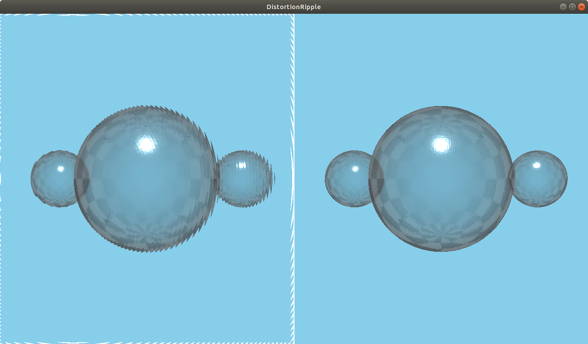

DistortionRipple QML Type
A ripple distortion effect. More...
| Import Statement: | import QtQuick3D.Effects 1.15 |
Properties
- center : vector2d
- distortionHeight : real
- distortionPhase : real
- distortionWidth : real
- radius : real
Detailed Description

The DistortionRipple effect adds circular ripples, moving away from the center of the effect.
Property Documentation
center : vector2d |
The focus point of the distortion. Qt.vector2d(0.5, 0.5) (i.e. the center of the scene) by default.
distortionHeight : real |
The distortion amount. Sensible values are in the range [0...100]. 10 by default.
distortionPhase : real |
The offset of each wave. Animate this property to see the waves move. Sensible values are in the range [0...360]. 0 by default.
distortionWidth : real |
The width of a ripple. Sensible values are in the range [2...100]. 10 by default.
radius : real |
The spread between ripples. Sensible values are in the range [0...100]. 100 by default.